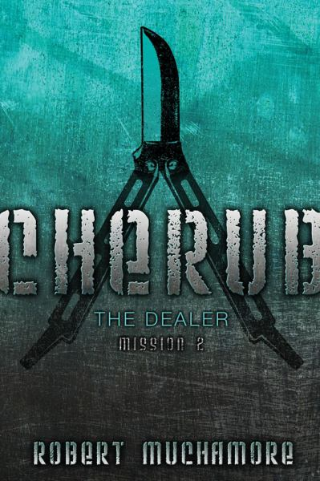

At Cherub, agents are highly trained, extremely talented, and all under the age of 18. They are used for spying on terrorists, hacking into classified documents, and help resolve any problems that have a threat of killing ctizens.
Michael is the creator of the Ruby on Rails Tutorial and principal author of the Learn Enough to Be Dangerous introductory sequence. He is an advanced student of Krav Maga and has a three-step plan for world domination. Rumors that he's secretly a supervillain are slightly exaggerated.
When he's not literally swimming with sharks or hunting powder stashes on his snowboard, you can find Lee in front of his computer designing interfaces, doing front-end development, or writing some of the interface-related Learn Enough tutorials.
You may have seen him shredding guitar live with Capital Cities on Jimmy Kimmel, Conan, or The Ellen Show, but rest assured Nick is a true nerd at heart. He's just as happy shredding well-spec'd lines of code from a tour bus as he is from his kitchen table.